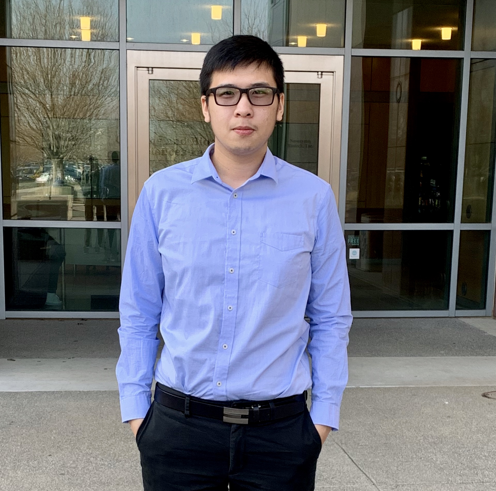

 I'm currently a M.S student in Electrical and Computer Engineering at University of California, Davis. I received my bachelor degree in Electrical Engineering at National Taipei Univeristy of Technology, Taipei, Taiwan. My research interets includes data analysis and visualization, image processing, computer vision and its applications.
I'm currently a graduate student in Marcu Lab from Biomedical Engineering Department at University of California, Davis. My research project includes fluorescent lifetime imaging (FLIm) Data Visualization, Graphical User Interface (GUI) for FLIm map generation, and Real-Time approach for FLIm data.
Modify 8